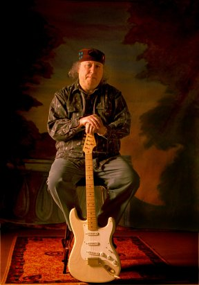

Далеко не всякий музыкант может хотя бы помыслить о том, чтобы исполнять великие композиции прошлого, давно уже ставшие классикой жанра. Но только не Питер Грин. На сей раз величие фигуры легендарного британского блюзового гитариста, одного из отцов-основателей группы Fleetwood Mac, соизмеримо с величием человека, кавер-версии чьих произведений Питер исполняет на своем новейшем (и первом за 17 лет!) студийном альбоме, который выходит в свет на сублэйбле Artisan Recordings британской независимой фирмы Snapper Music 18 мая. Это - Роберт Лирой Джонсон (1911-1938), настоящий изобретатель рок-н-ролла. Альбом же называется "The Robert Johnson Songbook".Питер Грин отчего-то известен на Руси в основном как любимый гитарист Гэри Мура (Гэри Мура новейшего периода, естественно). И мало кто здесь склонен вспоминать, что Питер - одна из величайших звезд британского блюза и автор хита "Black Magic Woman", ставшего воистину бессмертным в исполнении Карлоса Сантаны и его группы.
Восхождение молодого Питера Гринбаума (Грин - сценический псевдоним) к славе началось в первой половине 60-х в лондонском Ист-Энде, в клубах которого Питер выступал в биг-битовом составе Peter B's будущего клавишника Camel Питера Барденса, играя на бас-гитаре. Именно в этой группе состоялось знакомство Грина и будущего сооснователя Fleetwood Mac, барабанщика Мика Флитвуда. Но всего год спустя Питер стал лидер-гитаристом группы, вскоре сменившей свое название на Shotgun Express (ее вокалистом в то время был Род Стюарт), а стилистику - на ритм-энд-блюз.
В 1966-м последовало предложение, от которого было невозможно отказаться: не кто-нибудь, а один из крестных отцов британского блюза Джон Мэйолл пригласил Питера в свою группу Bluesbreakers как замену Эрику Клэптону. Именно этому составу, куда помимо Джона и Питера входили барабанщик Эйнсли Данбар и басист Джон Мэкви, было суждено записать одну из лучших работ британского блюза за всю его историю - альбом "A Hard Road". А уже в 1967 году Питер и Джон Мэкви, ища выход собственным амбициям, объединились с Миком Флитвудом и Джереми Спенсером в группе, поначалу носившей более чем красноречивое название Peter Green's Fleetwood Mac. И хотя спустя несколько месяцев название молодого коллектива сократилось до общеизвестного, никогда и ни у кого не возникало сомнения - кто же является истинным лидером группы. Увы, трехлетняя история Fleetwood Mac как группы Питера Грина, даровавшей человечеству такие композиции, как "Albatross", "Man Of The World", "Oh Well", "The Green Manalishi" и, естественно, "Black Magic Woman" (все они в разное время попадали в британский Топ-5), завершилась в мае 1970-го: интерес Питера к эксцентрическим формам христианства привел его к уходу не только из Fleetwood Mac, но и вообще из музыкального бизнеса. Его последним "прощай" огромной массе поклонников стал, казалось, вялый сольник "The End Of The Game" да неожиданное гостевое участие в американском турне родной группы годом позже. 70-е - эпоха слухов, порожденных жизненными приключениями Питера Грина. Да, на счету Грина - отнюдь не музыкальные достижения: жизнь в религиозной коммуне в Израиле, работа то могильщиком, то санитаром и в конце концов - помещение музыканта в 1977-м в психбольницу. Оба сольных альбома, записанные Питером в 1981 году, не изменили этой печальной ситуации...
И тем удивительнее оказалось триумфальное возвращение Питера к активной деятельности полтора года назад с серией концертов нового состава The Splinter Group по залам и аренам Великобритании. Превосходный безымянный концертный альбом, составленный исключительно из классического блюзового материала, был выпущен 13 мая прошлого года: концертные версии, записанные вместе с гитаристом Найджелом Уотерсом, работавшим в начале 70-х в Fleetwood Mac, клавишником Спайком Эдни (экс-Dexy's Midnight Runners) и величайшей хэви-металлической ритм-секцией всех времен и народов - Нилом Мюрреем и Кози Пауэллом, оказались разбавлены двумя замечательными акустическими студийными номерами - кавер-версиями "Hitch Hiking Woman" Блэк Эйса и "Travelling Riverside Blues" Роберта Джонсона. И человечество вспомнило о Питере Грине - в самом конце года он отыграл несколько концертов с Би Би Кингом, а в январе его имя было торжественно занесено в нью-йоркский Rock And Roll Hall Of Fame. На сцене по окончании торжественной церемонии воистину суперзвездным составом - Питер Грин, Мик Флитвуд, Джон Мэкви и Карлос Сантана - была исполнена, естественно, бессмертная "Black Magic Woman".
Продолжение следует: в самые ближайшие дни нам предстоит знакомство с новой и, без всякого сомнения, шедевральной работой Питера Грина: в "The Robert Johnson Songbook" вошли 16 из 29 написанных загадочным изобретателем рок-н-ролла композиций. В записи альбома принял участие новый состав The Splinter Group: Найджел Уотерс, Нил Мюррей, пианист Роджер Коттон и барабанщик Ларри Толфри. В качестве важного гостя на альбоме профигурировал экс-вокалист Free, Bad Company и The Firm Пол Роджерс, а продюсером работы стал неоднократный обладатель Grammy Кенни Дентон, начинавший свою карьеру инженером Pye Mobile Studio почти три десятилетия назад и записывавший легендарные выступления Джими Хендрикса в Альберт-Холле и на фестивале Isle Of Wight. Что ж, обстоятельства жизни и творчества Питера Грина дают все основания надеяться на то, что именно ему суждено гораздо глубже, чем кому-либо, проникнуть в мрачные глубины творчества Роберта Джонсона. Да, Питер Грин ныне вышел на тот же перекресток, что и Роберт Джонсон шестьдесят лет назад. Но дьявол, надеюсь, там больше не появится.
Всеволод Баронин
Перепечатано из газеты Московский
комсомолец за 24.05.1998, номер 96.